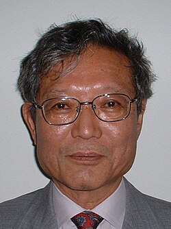

Masaki Kashiwara | |
|---|---|
 Official portrait of Japan Academy, 2007 | |
| Born | January 30, 1947 |
| Education | University of Tokyo (BSc, MSc) Kyoto University (PhD) |
| Known for | algebraic analysis microlocal analysis D-modules crystal bases Riemann–Hilbert correspondence Kazhdan–Lusztig conjecture |
| Awards | Iyanaga Prize (1981) Asahi Prize (1988) Japan Academy Prize (1988) Kyoto Prize (2018) Chern Medal (2018) Asian Scientist 100 (2019) Abel Prize (2025) |
| Scientific career | |
| Fields | Mathematics |
| Institutions | Kyoto University |
| Mikio Sato | |
Masaki Kashiwara (Japanese: 柏原 正樹, Hepburn: Kashiwara Masaki; born January 30, 1947) is a Japanese mathematician and professor at the Kyoto University Institute for Advanced Study (KUIAS). He is known for his contributions to algebraic analysis, microlocal analysis, D-module theory, Hodge theory, sheaf theory and representation theory.[1] He was awarded the Abel Prize in 2025,[2] and is the award's first recipient from Japan.[3]
Kashiwara was born in Yūki, Ibaraki on January 30, 1947.[4] One of his early mathematical fascinations was the tsurukamezan problem, which asks the number of cranes and turtles given a set number of legs and heads.[5]
Kashiwara spent his undergraduate years at the University of Tokyo (UTokyo), earning his bachelor's degree in mathematics in 1969. He then went on to study at the same institution for his master's degree, which he completed in 1971.[6] At UTokyo, Kashiwara was a student of Mikio Sato. His master's thesis, written in Japanese, laid the foundations for the study of D-modules.[4][7] He continued studying under Sato at Kyoto University after Sato moved to the Research Institute for Mathematical Sciences (RIMS) there, earning his doctorate in 1974.[7][8]
He was a plenary speaker at International Congress of Mathematicians in 1978 and an invited speaker in 1990.[9] He is a foreign associate of the French Academy of Sciences[10] and a member of the Japan Academy.[7] He has been involved in Research Institute for Mathematical Sciences (RIMS) since 1978 as a professor and later director.[11][7]
Kashiwara was awarded Japan's Order of the Sacred Treasure, Gold and Silver Star in 2020.[4]
He received the Abel Prize in 2025,[2] the first Japanese national to do so.[5] The chairman of the Prize Committee, Helge Holden, described Kashiwara's contributions as "very important in many different areas of mathematics,” and explained that Kashiwara "has solved some open conjectures — hard problems that have been around [and has] opened new avenues, connecting areas that were not known to be connected before.”[12] The award ceremony is planned to be held at Oslo, Norway on May 20, 2025.[5]
Kashiwara and Sato established the foundations of the theory of systems of linear equations partial differential equations with analytic function coefficients, introducing the idea of applying sheaf cohomology to complex analysis.[13] Kashiwara's master thesis states the foundations of D-module theory.[13] Kashiwara developed the analytic theory of D-modules, while Joseph Bernstein introduced a similar approach in the algebraic case.[13]
Kashiwara's PhD thesis proves the rationality of the roots of b-functions (Bernstein–Sato polynomials), using D-module theory and resolution of singularities.[1][13]
Kashiwara's 1973 paper with Sato and Takahiro Kawai on the involutivity of characteristics of microdifferential systems and classification at generic points of microdifferential systems was described by Pierre Schapira as having "an enormous influence on the analysis of partial differential equations".[13]
{kind=link}